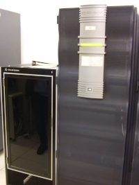
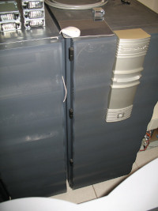

The Cray J90 is a vector processor supercomputer, based on the Cray Y-MP architecture like our Cray C90, which was launched in 1994. In contrast to the heavy design (in every aspect!) of the Cray C90, this supercomputer is an air-cooled system consisting of an I/O and a compute rack. Therefore it's perfect to operate the supercomputer frequently.
A major difference between the Cray C90 and J90 is the change from ECL to CMOS technology. But the Cray J90 stays binary compatible to these dinosaurs and runs even the same UNICOS operating system. On top of that, the code you're developing on the Cray J90 should run on a Cray-1, too! Maybe noticeable slower.
The Cray J90 got the code-name Jedi during development at Cray Resarch. That's why we're naming our J932 jedi, too. The smaller brother J916 is the Jedi-Padawan of our J932 and thus, your primary system to learn and experience the Cray vector processor supercomputing world!
If your interessted in more information about the Cray J90, have a look at Wikipedia.
Since our Cray J932 already named jedi, the smaller J916 is called padawan. This system will be scheduled more frequently for operating and should be used as the primary development system. If your code works fine, you can request a workload on the Cray J932.
The internal code-name at Cray Research for the Cray J90 series was Jedi. And that's why we're naming this supercomputer jedi, too. The J932 is the largest possible configuration for this series of vector processor supercomputers.
